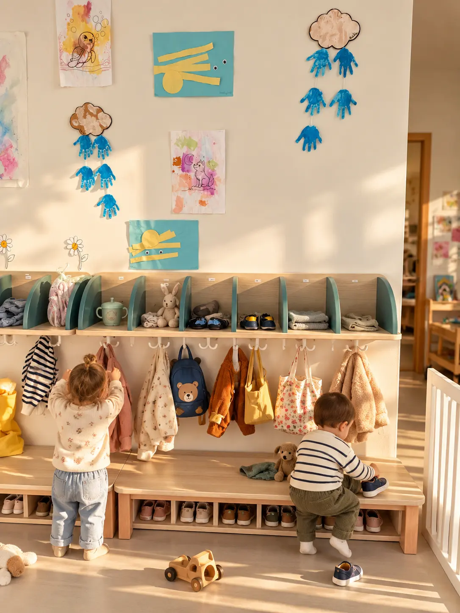
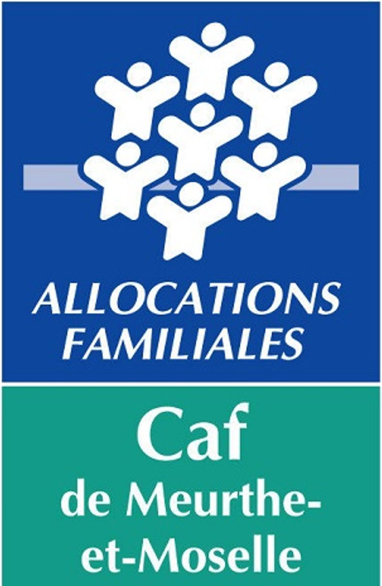
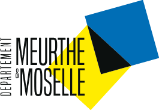
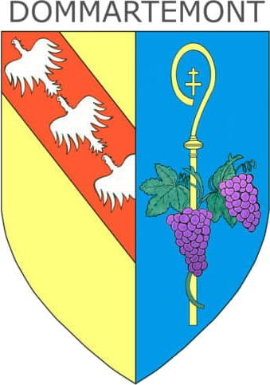
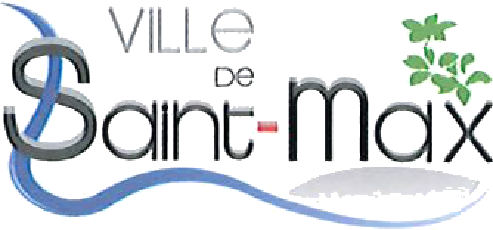
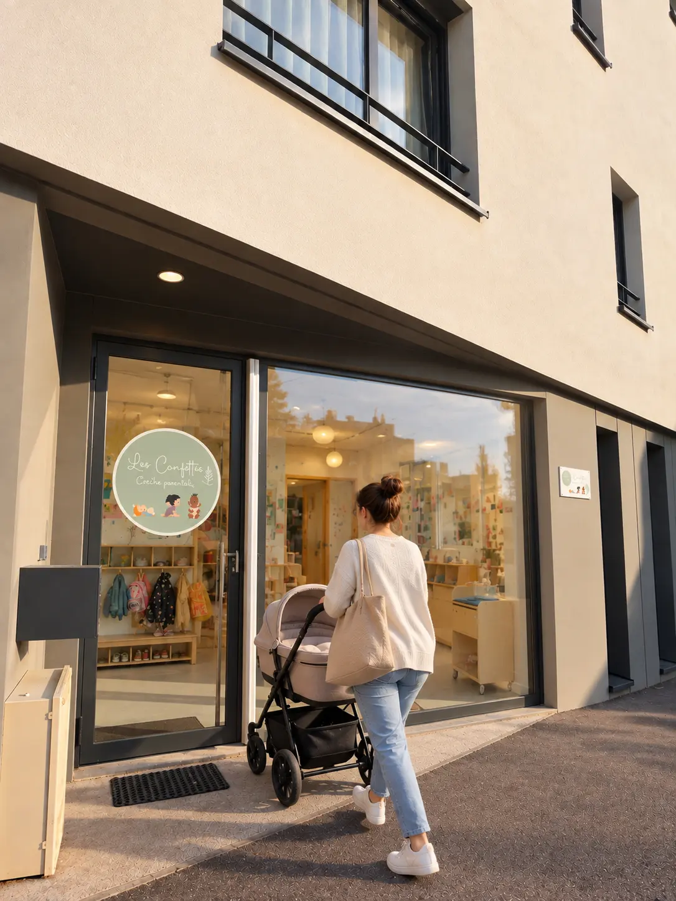
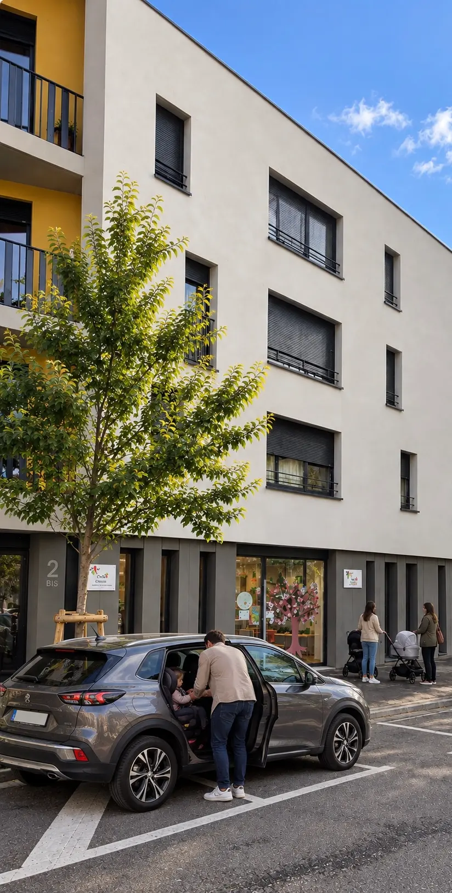
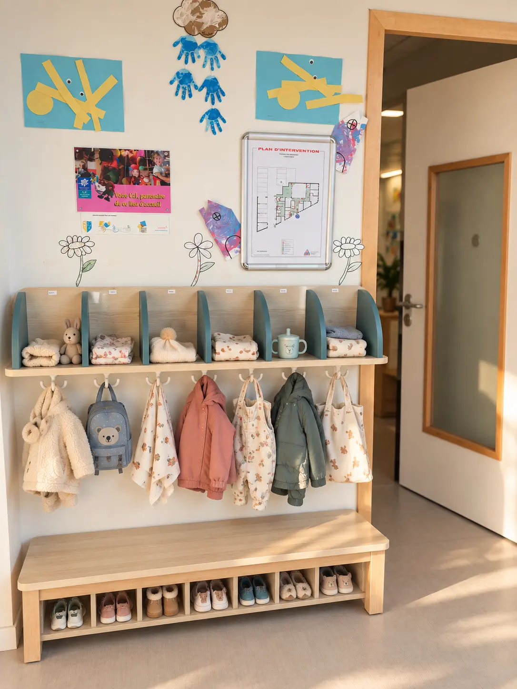

Une petite structure
20 enfants pour conserver une ambiance familiale.
Crèche parentale · Saint-Max
Une crèche parentale où chaque enfant peut grandir et s'épanouir dans un environnement bienveillant.

Avec le soutien de





Les Confettis, c'est quoi ?
Les Confettis est une association loi 1901 à caractère parental. Ici, les parents ont toute leur place dans la vie de la crèche et participent à son fonctionnement.
Comment ça fonctionne ?
Une crèche parentale repose sur un équilibre entre parents, professionnels et enfants. Voici, simplement, comment il se construit aux Confettis.
20 enfants pour conserver une ambiance familiale.
Les parents sont membres et gestionnaires de l'association.
Les enfants sont accompagnés au quotidien par des professionnels de la petite enfance.
Parents, enfants et professionnels participent à la vie de la crèche.
La place des parents
Ici, les parents sont pleinement acteurs de la vie de la crèche. Chaque famille s'implique à travers des temps de présence obligatoires, permettant de contribuer au quotidien de la crèche.
Les parents sont membres de l'association et participent à sa gestion. Ils peuvent contribuer à :

Nos valeurs
Parce que le jeu est au cœur des apprentissages.
Découvrir, manipuler, expérimenter.
Grandir avec les autres.
Développer son autonomie et sa confiance.
Notre projet pédagogique
Éveil et découvertes
Chaque année, notre projet pédagogique se renouvelle autour d'un même objectif : accompagner chaque enfant dans son épanouissement et ses découvertes.
Un projet vivant, construit avec les enfants, les familles et l'équipe.
La vie aux Confettis
Chaque journée s'adapte au rythme et aux besoins des enfants.
Du lundi au vendredi, de 7h30 à 18h15.
La crèche est généralement fermée 4 semaines en été, une semaine entre Noël et le Nouvel An, et à certains ponts de l'année.
Notre histoire
L'association est née en 1995 de l'initiative d'une maman de Dommartemont qui ne trouvait pas de solution d'accueil pour son enfant.
Depuis, l'association a évolué avec les familles, tout en conservant ce qui fait son identité : une crèche parentale où chacun contribue à faire vivre un lieu accueillant et bienveillant.

Création de l'association le 3 avril 1995 à l'initiative d'une mère de Dommartemont.
Installation dans une ancienne ferme réhabilitée rue de Malzéville à Dommartemont et inauguration de la crèche le 11 octobre 1996.
La crèche accueille progressivement les familles de Dommartemont, Essey-lès-Nancy et Saint-Max.
Les parents participent à la gestion de l'association, aux activités, à la décoration, au bricolage et à la vie quotidienne.
Les Confettis accueille à Saint-Max jusqu'à 20 enfants des trois communes.
Une histoire commencée en 1995, portée par des parents et construite autour des enfants.
La crèche
8 professionnel·le·s
La vie aux Confettis
Quelques images des espaces de la crèche.
Demande de place
Le plus simple est de nous écrire directement. Pour que nous puissions vous répondre au mieux, pensez à préciser dans votre message :
Dans votre message
Nos partenaires
Les Confettis s'appuie sur le soutien de la CAF, du Département de Meurthe-et-Moselle et de trois communes de l'agglomération nancéienne.